<div class="windowframe"
  [ngStyle]="{'left':5+'vw','top':4+'vh','width':69+'vw','height':82+'vh'}">
  <!-- [ngStyle]="{'left':posx+'px','top':posy+'px','height':height+'px','width':width+'px'}" -->

  <div class="windowbuttons">
    
    <div class="buttns">
      <button class="minimise"></button>
      <button class="maximise"></button>
      <button class="close"></button>
    </div>

  </div>
  <div class="navigation">
    <div class="navbuttons">
      <button class="back"></button>
      <button class="forward"></button>
    </div>
    <div class="addressbar">
      <p>desktop</p>
    </div>
  </div>
  <div class="container">
    <router-outlet></router-outlet>
  </div>
  <div class="footer"></div>
</div>

<!-- <script>
  const winframe = document.querySelector(".windowframe")
  const head = document.querySelector(".windowbuttons")
  function onDrag({movementX,movementY})
  {
    let getStyle = window.getComputedStyle(winframe)
    let left = parseInt(getStyle.left);
    let top = parseInt(getStyle.top);
    winframe.style.left = `${left + movementX}px`;
    winframe.style.top = `${top + movementY}px`;
  }
  head.addEventListener("mousedown",()=>{
    console.log("test")
    head.addEventListener("mousemove",onDrag)
  })
</script> -->
